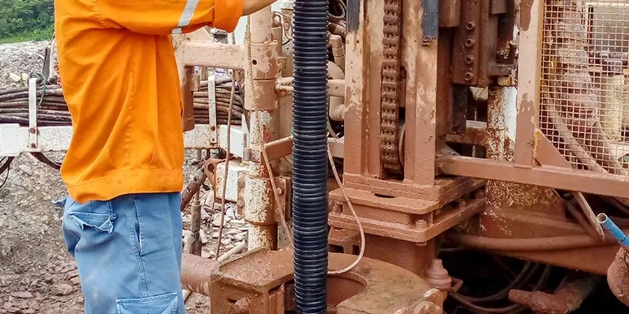

Our firm provides comprehensive geotechnical engineering services in Chandler, Arizona, supporting residential, commercial, and municipal projects throughout the East Valley. We combine advanced subsurface investigation methods—including electrical resistivity and standard penetration testing—with solid foundation design and construction monitoring. From preliminary site characterization through final code-compliant reports, our local team delivers reliable data and practical solutions tailored to Chandler’s unique ground conditions. We work closely with developers, architects, and contractors to ensure safe, cost-effective outcomes on every project.

Method and coverage
Regional considerations
Our team brings consolidated regional experience across Chandler and the greater Phoenix metro area, having completed hundreds of projects on the alluvial soils of the Salt River Valley. We operate a calibrated in-house laboratory for soil classification, compaction, and strength testing, and we maintain strong working relationships with local contractors, city plan reviewers, and Arizona Department of Transportation (ADOT) personnel. Every investigation is tailored to Chandler’s specific subsurface variability, and our reports are written to meet or exceed local building department requirements. We also incorporate advanced techniques like ground penetrating radar for utility mapping and slab evaluation when needed.
Process video
Standards that apply
All geotechnical work in Chandler follows national and local U.S. standards. Subsurface explorations and laboratory testing adhere to ASTM methods (e.g., D1586 for SPT, D422 for grain-size analysis, D4318 for Atterberg limits). Seismic design parameters are derived using ASCE 7-22 and the 2021 International Building Code (IBC). Foundation recommendations comply with ACI 318-19 and local building department guidelines. Pavement and subgrade evaluations follow AASHTO and ASTM D1883 for California Bearing Ratio (CBR) testing. Our reports are prepared by licensed Professional Engineers in Arizona, ensuring full regulatory compliance.
FAQ
What are the typical foundation types used in Chandler, Arizona?
For most residential and light commercial projects in Chandler, shallow foundations—such as continuous footings or slab-on-grade—are suitable due to the competent alluvial sands and gravels. Deeper foundations (drilled piers or auger-cast piles) may be required for heavier structures or where undocumented fill is present. Post-tensioned slabs are common to control cracking in clayey zones, and our geotechnical reports include specific recommendations for bearing capacity, settlement, and lateral resistance based on site-specific borings.
How deep does groundwater affect construction in Chandler?
Groundwater in Chandler is generally deep, often exceeding 100 feet below ground surface, so it rarely impacts shallow excavations or foundation construction. However, localized perched water can occur near agricultural canals or after prolonged precipitation, requiring temporary dewatering or sump pumps. For deep excavations or underground structures, we perform groundwater monitoring and provide recommendations for cutoff walls or drainage systems if needed.
What building codes and standards apply to geotechnical work in Chandler?
Chandler adopts the 2021 International Building Code (IBC) with Arizona-specific amendments. Geotechnical investigations must follow ASTM standards for sampling and testing, and seismic design is governed by ASCE 7-22. All reports must be sealed by a Professional Engineer licensed in Arizona. The city also requires site-specific soil reports for most new construction, including single-family homes, to verify bearing capacity and expansive soil potential.
Do I need a geotechnical report for a small residential project in Chandler?
Yes, the City of Chandler typically requires a geotechnical report for new residential construction, additions exceeding 500 square feet, and any project involving retaining walls over 4 feet in height. Even for smaller projects, a report can identify undocumented fill, variable soil conditions, or shallow groundwater that could affect foundation performance. We offer scaled scopes—from limited test pits to full borings—to match your project’s size and budget.